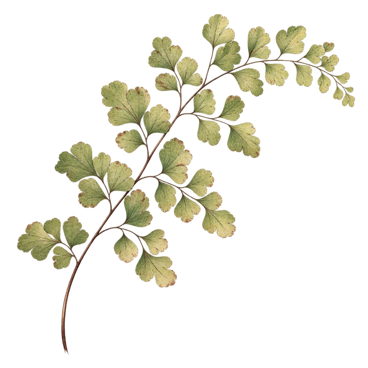
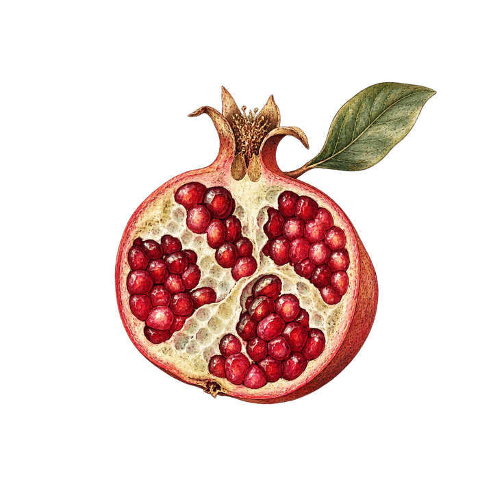
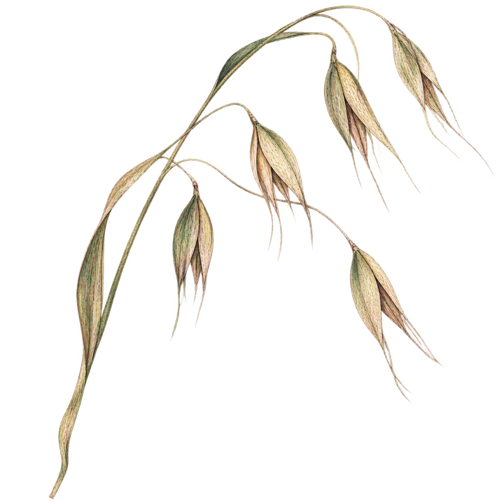

Fertility
Fertility Support
Practical, one-to-one support while navigating fertility care, appointments, decisions, and next steps.
Explore fertility supportDoula support in Elgin, Ontario and surrounding
Offering fertility, birth, and postpartum support

Fertility
Practical, one-to-one support while navigating fertility care, appointments, decisions, and next steps.
Explore fertility supportBirth Doula Care
Preparation before birth, steady support through labour, and grounded advocacy when decisions need to be made.
Explore birth support
Prenatal Preparation
Birth education coming 2027
View what’s coming
Postpartum & Family
Practical follow-up, processing, feeding support, and help orienting your family after birth.
Explore postpartum supportLocal doula care
Birth Literacy supports families who want preparation that is practical, physiologically informed, and steady. The focus is not vague reassurance. It is helping you understand your body, communicate clearly with your care team, and feel less alone through pregnancy, labour, and early postpartum.
Begin with a conversation
A consult gives us room to talk through your location, due date, care team, birth hopes, and what kind of doula support would actually help.